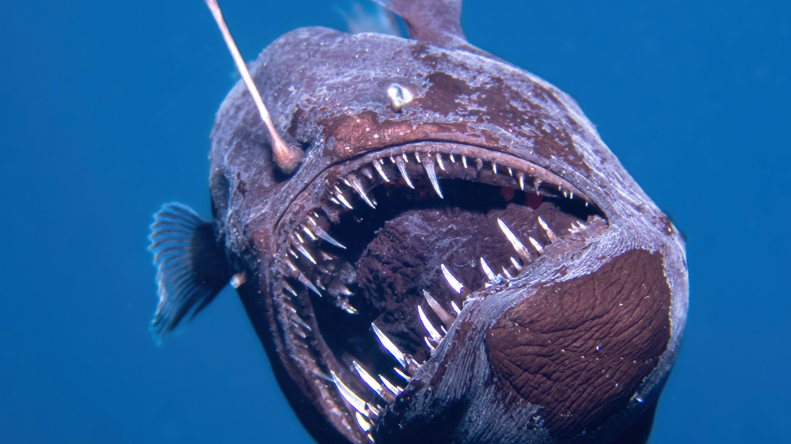

QUESTIONS FOR AN ANGLERFISH
An open letter to the Black Seadevil Anglerfish who swam too close to the Sun.
by MACKEREL CHEESE
Media by CNN ©
FEBRUARY 19, 2025
|  |
The Black Seadevil found near the surface of the ocean, CNN |
You don’t know this, but they call you the devil. Rows of needle-like teeth in an open mouth with lidless eyes never quite seeing what’s in front of you. Hanging above is a sac of bacteria, emitting light in the dark vast ocean hoping to draw something else in to push down the hunger.
Even though you are kilometers away, they call you scary, creepy, and even dangerous. They fear what they do not know.
But I will hold you if I can. A small wiggling thing that could fit in the palm of my hands. For I too understand the animalistic Icarian desire of wanting something we were never meant to have.
They say you are not a great swimmer. That you find it easier to just sit and wait for something to crawl into your mouth before trapping it with your teeth. And yet, you swam for hours, maybe even days - swimming higher and further than anyone believed you could.
It was a long swim wasn’t it? Against all odds, your tiny body made its way upwards and onwards. To traverse treacherous waters and defy all expectations anyone else had about you. Were you hoping for a better life - one that didn’t hurt as much? Or did you want to see beyond what your body was made for?
They say you were sick - that this was a neurological response to an illness in your mind.
Maybe I’m sick too. My glowing lure may be from a phone screen but I too sit and wait for opportunity to pass by. I sit and I wait and I watch before sinking my jaws into the pixels, blindly consuming what is in front of me. It's easier to look at the artificial light than to bask in the one outside.
And in case no one else has asked, - Are you hungry? Have you eaten yet?
Was it easier to leave everything you have ever known than to deal with the pressures of home? Was it scary to leave everything behind?
Was it bravery or stupidity?
Was it a mistake?
Sometimes I find it easier to just swim down. To sink into the darkness, pressure building in my ears. The things in front of me are blurry but it hurts to look at them straight. When I break the surface for air, my lungs feel like exploding out of my chest.
That was the reason you died, wasn't it? The pressure you ran away from was also the only thing holding you together. I imagine that leaving home would rip me apart as well.
And yet you persisted. Were you stuck in a water column with no way out? The current pushing against you, forcing you to look upward and without a chance to turn back all the way until you reach the surface.
Was it warm? Did it feel nice?
Did it hurt?
Was it worth it?
I'm sorry little one, I hope the sunlight was a gentle as you imagined it would be.
Some may say that you’re just a fish, that I am overthinking this but maybe they don’t understand. After all, many may not have ever wanted something so badly that they would break their body for it.
You and I will never meet. I’m sorry the world was unkind and that I will never get to ask you these questions. Maybe I should find the answers myself.
Thank you my friend, for reminding me that Icarian desires are sometimes worth dying for.
Subscribe to Journalism That Speaks Truth To Power.
Get unlimited access to WitchWeekly.com on all your devices.